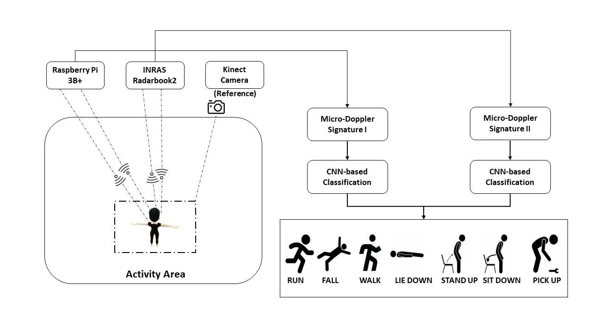
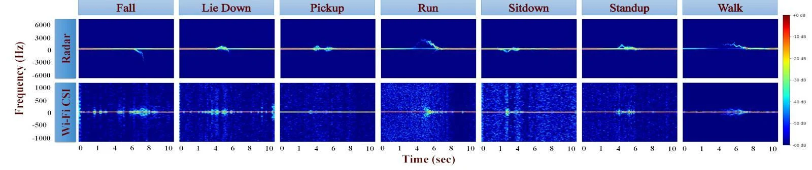
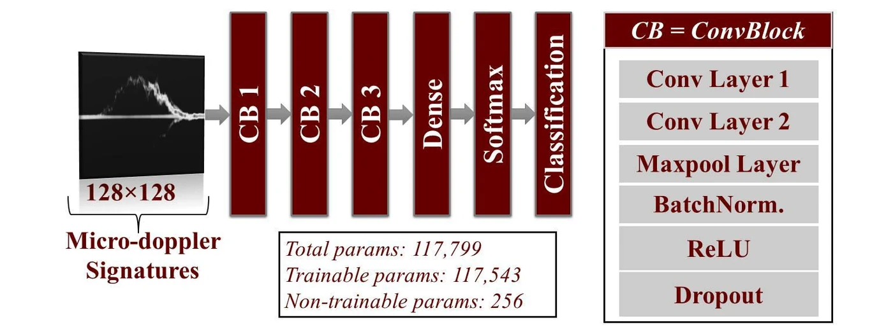
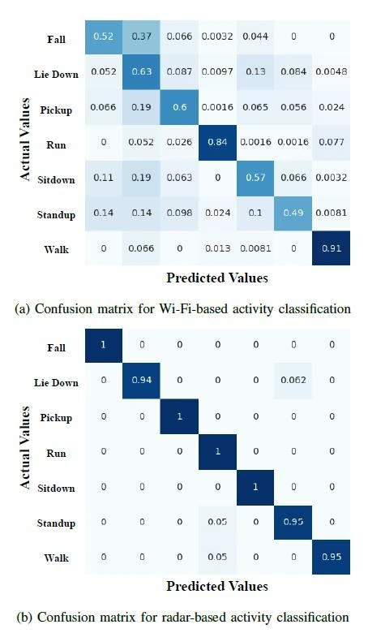

Fall 2023 · Graduate research
Human Activity Recognition: Wi-Fi CSI vs. Radar
A side-by-side test of two RF sensors on the same seven everyday activities. I recorded the same people with a 76–80 GHz FMCW radar and with Wi-Fi channel state information (CSI) from a Raspberry Pi, turned both into spectrograms, and trained the same CNN on each.

Why compare them
RF sensors can recognise human motion without capturing images of people, and they work regardless of clothing, which makes them attractive where constant camera surveillance is not wanted, such as fall detection in care homes. Wearables need batteries and someone to wear them. Wi-Fi sensing is popular because the hardware is everywhere, but the papers I reviewed rarely compared Wi-Fi and radar directly on the same data. So I collected both at once and compared them on equal terms.
Setup
- Wi-Fi
- Raspberry Pi 3B+ running the Nexmon CSI firmware on its Broadcom BCM43455c0; 5 GHz channel, 80 MHz wide (256 subcarriers)
- Radar
- INRAS Radarbook2, FMCW at 76–80 GHz; one transmit–receive pair of its 2 TX / 16 RX
- Reference
- Azure Kinect camera recording each sample
- Geometry
- Radar on a table 1 m high, subject 2 m in front of it, 10 s per recording
Two practical notes. Nexmon only supported kernel 5.10.92 at the time, while Raspberry Pi OS had moved to 5.15, so I held back the kernel update to build the firmware. And the hardware I first planned to use did not work out: the Infineon BGT60LTR11 Shield2Go cannot stream raw samples (its SPI mode is not supported), and getting CSI out of the Infineon PSoC 62S2 Wi-Fi kit needed firmware work I did not have time for.
Dataset and spectrograms
Seven activities: fall, lie down, pick up, run, sit down, stand up and walk. Five people performed each activity 20 times, giving 100 recordings per activity and 700 in total. For each person and activity, the first 16 recordings were used for training and the last 4 for testing (an 80/20 split).
A moving body shifts the frequency of the signal it reflects (the Doppler effect). For radar, the micro-Doppler spectrogram is the squared magnitude of the short-time Fourier transform of the received signal. For Wi-Fi, the same shift shows up in the CSI; I built spectrograms from subcarriers 90 to 120. Both were saved as 128×128 grayscale images.

The classifier
The same small 2D CNN (about 118k parameters) classified both kinds of spectrogram. It has three convolution blocks, each with two 3×3 convolution layers (32, 32 and 64 filters), followed by 3×3 max pooling, batch normalisation, ReLU and dropout of 0.3. A dense layer of 128 units with dropout 0.3 feeds a softmax over the seven classes.

Results
Radar beat Wi-Fi by 32.7 percentage points on test accuracy.
| Sensor | Accuracy | Precision | Recall | F1 score |
|---|---|---|---|---|
| Wi-Fi CSI | 65.09 | 67.91 | 65.09 | 65.72 |
| Radar | 97.78 | 97.99 | 97.68 | 97.78 |

Radar is clearly ahead, but 65% from commodity Wi-Fi hardware still shows real potential for indoor monitoring. This was a first study in a controlled lab with a small dataset.
What comes next
- A larger, more varied dataset of typical indoor activities, adding the camera data.
- Real-time classification, and a real-time notification system for events such as falls.
- Wi-Fi CSI from the PSoC 62S2 kit, fused with radar, and raw-data experiments with the BGT60LTR11 once its SPI mode is supported.
The Wi-Fi side continued in my master's research, and I later rebuilt Wi-Fi activity recognition in hardware: Wi-Fi HAR on the Versal AI Engine.
Files and links
- Original write-upHackster.io, with full references
- CodeGitHub: dataset split, spectrograms, CNN training
Dataset and code: A. Dahal, S. Biswas, S. Z. Gurbuz and A. C. Gurbuz, "Wi-Fi radar comparison", GitHub, 2023.